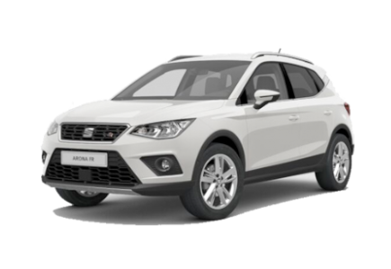
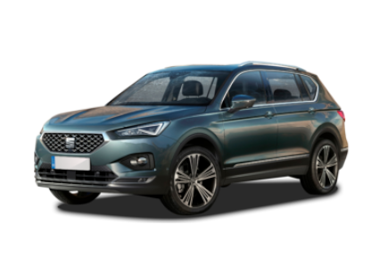

SEAT | |
 |
SEAT, S. A., es una empresa española de automóviles fundada por el desaparecido Instituto Nacional de Industria el 9 de mayo de 1950. |
SEAT LEON |
|
El SEAT León es un compacto, del segmento C, fabricado por SEAT desde 1998. Actualmente se comercializa la cuarta generación, presentada en 2020. |
|
CARACTERISTICAS |
|
Potencia |
140 cv |
peso |
1.650 kg |
precio |
22.000 € |
consumo |
6.3 l |
cilindrada |
1.9 cc |
SEAT IBIZA |
|
El SEAT Ibiza es un utilitario, del segmento B, fabricado por SEAT desde 1984. Actualmente, se comercializa la quinta generación, presentada en 2017 y actualizada en 2021 con un interior de nueva factura. |
 |
CARACTERISTICAS |
|
Potencia |
110 cv |
peso |
1.450 kg |
precio |
16.000 € |
consumo |
5.7 l |
cilindrada |
1.4 cc |
SEAT ARONA |
|
El SEAT Arona es un SUV urbano, del segmento B, fabricado por SEAT. Actualmente se comercializa la primera generación, presentada en 2017, y actualizada en 2021 con un nuevo interior y mejoras en calidad. |
 |
CARACTERISTICAS |
|
Potencia |
135 cv |
peso |
1.740 kg |
precio |
17.000 € |
consumo |
6.2 l |
cilindrada |
1.4 cc |
SEAT TARRACO |
|
El SEAT Tarraco es un todocamino grande de hasta 7 plazas fabricado por SEAT, que se sitúa un escalón por encima del SEAT Ateca. El nombre del SEAT Tarraco hace alusión al topónimo de la antigua ciudad romana de Tarraco, hoy en día conocida como Tarragona. |
 | CARACTERISTICAS |
Potencia |
160 cv |
peso |
1.920 kg |
precio |
21.000 € |
consumo |
7.3 l |
cilindrada |
2.0 cc |